UDN
Search public documentation:
ViewportToolbarCH
English Translation
日本語訳
한국어
Interested in the Unreal Engine?
Visit the Unreal Technology site.
Looking for jobs and company info?
Check out the Epic games site.
Questions about support via UDN?
Contact the UDN Staff
日本語訳
한국어
Interested in the Unreal Engine?
Visit the Unreal Technology site.
Looking for jobs and company info?
Check out the Epic games site.
Questions about support via UDN?
Contact the UDN Staff
视口工具条
概述
视口选项
 这个按钮打开了包含选择一组选项的菜单，这些选项中的某些也可以在工具条上找到。那些选项中这里可以找到的是SHOW(显示)标志、视图模式和视口类型。
自2011年12月份的版本开始，右击Viewport Options(视口选项)按钮将会显示一个独立的显示标志窗口，以便可以轻松地控制视口中显示的内容。
这个按钮打开了包含选择一组选项的菜单，这些选项中的某些也可以在工具条上找到。那些选项中这里可以找到的是SHOW(显示)标志、视图模式和视口类型。
自2011年12月份的版本开始，右击Viewport Options(视口选项)按钮将会显示一个独立的显示标志窗口，以便可以轻松地控制视口中显示的内容。

Show(显示)
这个选项打开了一个子菜单，它包含了各种可以切换为打开关闭状态的显示标志，您可以用它们来显示或隐藏特定类型的几何体及帮助信息。还有一个用于重新设置当前Show(显示)标志为默认值的选项，当您确信某些应该出现在视口中的东西没有出现时这是有用的；同时当显示碰撞时它可以设置碰撞模型。 要想获得关于各种Show(显示)标志的更多信息，请参照显示标志页面。Show Volumes(显示体积)
这个选项打开一个包含标志的子菜单，这些标志可以用于切换可用的所有不同类型的体积的可见性以及控制显示或隐藏所有体积的功能。Show Groups(显示组)
这个选项打开了一个包含标志的子菜单，这些标志控制用户在当前关卡中创建的任何组的可见性，随之会影响到包含在这些组中的actors，同时它可以控制显示及隐藏所有组。Viewport Type(视口类型)
这个选项打开一个包含了可用视口类型的子菜单，包括透视口、顶视口、前视口、侧视口，使您可以从当前视口切换到任何一种特定的视口类型。Realtime(实时运行)
切换打开这个选项将会在视口中打开实时反馈功能，从而可以预览动画材质、粒子特效、声效等。 热键: Ctrl + RShow FPS(显示FPS)
切换这个选项将会显示关卡在当前视口中每秒钟渲染的帧数。这会在出现性能问题的地方提供快速反馈，但是需要记住的是编辑器中还有一些其它的动作正在进行、以及渲染其它的视口，所以就纯粹的数值来说并不总是十分地精确。 热键: Shift + HShow Stats(显示统计数据)
切换这个选项为打开状态将会启用在关卡编辑器视口中显示统计数据的功能，就好像可以在游戏中看到统计数据一样。通过在状态条中的编辑器控制台中输入不同的控制台命令可以启用显示不同组的统计数据。 热键: Shift + L 要想获得可用的统计数据命令行命令的更多信息，确定参照统计数据命令行命令?。视图模式
这部分包含了一系列视口使用来渲染场景的不同的视图模式。 要想获得关于视图模式的更多信息，请参照视图模式页面。Game View(游戏视图)
切换这项为打开状态将会导致视口像游戏渲染关卡那样渲染该关卡，它将会隐藏所有在正常游戏中不显示的项。 热键: GUnreal Matinee Preview(Unreal Matinee预览)
切换这个选项为打开状态，当打开Matinee 编辑器时，将会导致视口显示当前Matinee序列的预览。Unlit Movement(无光照运动)
切换这个选项为打开状态，为了使用户在视口中导航时获得更加平滑更加快速的效果，它会在导航时把视口切换到Unlit(无光照)视图模式。在具有大量几何体的较大的场景中，在视口中到处移动是非常麻烦的。启用这项会使得事情变得容易一些。View Culling / Occlusion(视图 剔除/遮挡)
如果切换这项为打开状态，将会设置当前视口作为遮挡父项，并且会激活编辑器中当前存在的其它透视视口中可以看到的遮挡。这使得您可以在其它的透视视口中看到那些几何体被遮挡，以及从遮挡父项视口中剔除了那些几何体。Viewport Type(视口类型)
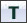
 左击这个按钮将会在所有可用视口类型间循环，视口类型包括透视口、顶视口、前视口和侧视口。右击按钮将可以打开一个菜单来为视口选择一种新的视口类型。
热键: Alt + F, Alt + G, Alt + H, Alt + J
左击这个按钮将会在所有可用视口类型间循环，视口类型包括透视口、顶视口、前视口和侧视口。右击按钮将可以打开一个菜单来为视口选择一种新的视口类型。
热键: Alt + F, Alt + G, Alt + H, Alt + J
Real Time(实时系统)
视图模式
Brush Wireframe(画刷线框)
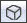
这个按钮会导致视口使用画刷线框视图模式进行渲染。 热键: Alt + 1Wireframe(线框)
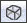
这个按钮会导致视口使用线框视图模式进行渲染。 热键: Alt + 2Unlit(无光照模式)
 这个按钮会导致视口使用无光照视图模式进行渲染。
热键: Alt + 3
这个按钮会导致视口使用无光照视图模式进行渲染。
热键: Alt + 3
Lit(带光照模式)
 这个按钮会导致视口使用带光照视图模式进行渲染。
热键: Alt + 4
这个按钮会导致视口使用带光照视图模式进行渲染。
热键: Alt + 4
细节光照
 这个按钮会导致视口使用细节照视图模式进行渲染。
热键: Alt + 5
这个按钮会导致视口使用细节照视图模式进行渲染。
热键: Alt + 5
Lighting Only(纯光照模式)
 这个按钮会导致视口使用纯光照视图模式进行渲染。
热键: Alt + 6
这个按钮会导致视口使用纯光照视图模式进行渲染。
热键: Alt + 6
光照复杂度
 这个按钮会导致视口使用光照复杂性视图模式进行渲染。
热键: Alt + 7
这个按钮会导致视口使用光照复杂性视图模式进行渲染。
热键: Alt + 7
Texture Density(贴图密度)
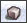
这个按钮会导致视口使用贴图密度视图模式进行渲染。 热键: Alt + 9着色器复杂度
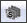
这个按钮会导致视口使用着色器复杂度视图模式进行渲染。 热键: Alt + 8LightMap Density(光照贴图密度)
 这个按钮会导致视口使用光照贴图密度视图模式进行渲染。
热键: Alt + 0
这个按钮会导致视口使用光照贴图密度视图模式进行渲染。
热键: Alt + 0
Lighting Only w/ Texel Density(具有贴图像素密度的纯光照模式)
 这个按钮会导致视口使用具有贴图像素密度的纯光照视图模式进行渲染。
热键: Alt + 连字符 ( - )
这个按钮会导致视口使用具有贴图像素密度的纯光照视图模式进行渲染。
热键: Alt + 连字符 ( - )
Game View(游戏视图)
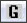
切换这项为打开状态将会导致视口像游戏渲染关卡那样渲染该关卡，它将会隐藏所有在正常游戏中不显示的项。 热键: G锁定视口
Lock Selected Actors to Camera(锁定选中的Actors到相机)
 切换这个按钮为打开状态将会把所有选中的actors的位置和方位锁定到视口相机的位置和方位。这对于重新放置那些需要放置在并朝向一个特定actor或特定位置的actor来说是一种很好的方法，比如当为过场动画移动相机时。
切换这个按钮为打开状态将会把所有选中的actors的位置和方位锁定到视口相机的位置和方位。这对于重新放置那些需要放置在并朝向一个特定actor或特定位置的actor来说是一种很好的方法，比如当为过场动画移动相机时。
Level streaming Volume Previs(关卡动态载入体积优先)
 切换这个按钮为打开状态时，由于要在视口中显示LevelStreamingVolumes(关卡动态载入体积)，所以将会导致关卡动态载入动作。
切换这个按钮为打开状态时，由于要在视口中显示LevelStreamingVolumes(关卡动态载入体积)，所以将会导致关卡动态载入动作。
Post Process Volume Previs(后期处理体积优先)
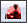
切换这个按钮为打开状态时，由于将要在视口中显示PostProcessVolumes(后期处理体积)，则改变为进行后期处理。Camera Movement Speed(相机运动速度)
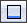
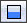
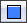
左击这个按钮将会在所有可用的相机运动速度间进行循环。右击按钮将会打开一个菜单来让您从中直接地选择一个速度。Play In Viewport(在视口中播放)
Tear Off Floating Copy（扯下浮动副本）
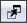
点击这个按钮将会创建一个当前视口的新的浮动副本，意味着它是一个单独的窗口不会停靠在编辑器中。Maximize Viewport(最大化视口)
 切换这项为打开状态将会最大化当前视口，使它占据关卡编辑器的整个视口区域。切换这项为关闭状态则会把视口恢复为原来的大小和位置。
切换这项为打开状态将会最大化当前视口，使它占据关卡编辑器的整个视口区域。切换这项为关闭状态则会把视口恢复为原来的大小和位置。